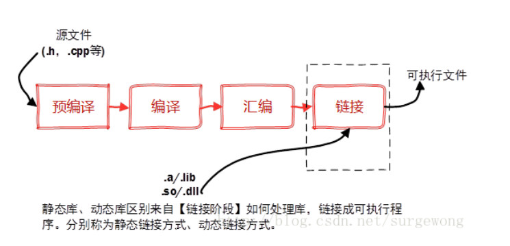

编译
C++
c++三种编译方法
使用 gcc (或 g++) 编译 ROS 2 节点
这是最原始、最底层的编译方式。你需要手动告诉编译器所有的头文件路径、库文件路径以及需要链接的库。
- 工作原理：直接在终端输入一行极长的命令，例如：
g++ talker.cpp -o talker -I/opt/ros/humble/include/... -L/opt/ros/humble/lib -lrclcpp ... - 优点：
- 无需任何构建系统支持。
- 有助于理解编译、链接的底层原理。
- 缺点：
- 极其繁琐：ROS 2 依赖项非常多，手动输入路径几乎不可能。
- 不可移植：换一台电脑或换一个 ROS 版本，路径全变了。
- 适用场景：极简单的单文件测试，或者学习 C++ 编译原理。
使用 make 编译 ROS 2 节点
make 通过读取一个名为 Makefile 的文件来自动化执行编译步骤。它比直接用 gcc 进了一步，因为你可以把复杂的命令写在脚本里。
- 工作原理：你编写一个
Makefile，定义好变量和规则，然后在终端输入make。 - 优点：
- 增量编译：只会重新编译修改过的文件，节省时间。
- 脚本化：不再需要重复输入长命令。
- 缺点：
- 语法晦涩：Makefile 语法相对原始。
- 手动维护依赖：你仍然需要手动在 Makefile 里写死 ROS 的安装路径，不够灵活。
- 适用场景：小型、不依赖于 ROS 标准构建工具（colcon）的独立 C++ 项目。
使用 CMakeLists.txt 编译 ROS 2 节点
这是 ROS 2 官方推荐的标准方式。CMake 是一个跨平台的构建系统生成器，它不直接编译，而是生成 Makefile 或 Ninja 文件。
- 工作原理：使用
find_package(rclcpp REQUIRED)自动寻找 ROS 2 的路径。 - 优点：
- 高度自动化：自动处理复杂的依赖关系（如
ament_cmake）。 - 跨平台：同一套代码可以在 Linux、Windows、macOS 上生成对应的构建配置。
- 集成度高：完美配合
colcon build命令，实现整个工作空间的统一管理。 - 缺点：
- 需要学习 CMake 的语法规则。
- 适用场景：所有正式的 ROS 2 开发。
gcc编译
动态链接库
-

-
静态（链接）库：在链接步骤中，链接器将从库文件取得所需的代码，复制到生成的可执行文件中，这种库称为静态（链接）库，其特点是可执行文件中包含了库代码的一份完整拷贝，缺点是被多次使用就会多份冗余拷贝
-
动态（链接）库：程序在开始运行后调用库函数时才被载入，这种库独立于现有的程序，其本身不可执行，但包含着程序需要调用的一些函数，这种库称为动态（链接）库（Dynamic Link Library）。
-
文件格式
- 在widows平台下，静态链接库是.lib文件，动态库文件是.dll文件。在linux平台下，静态链接库是.a文件，动态链接库是.so文件。